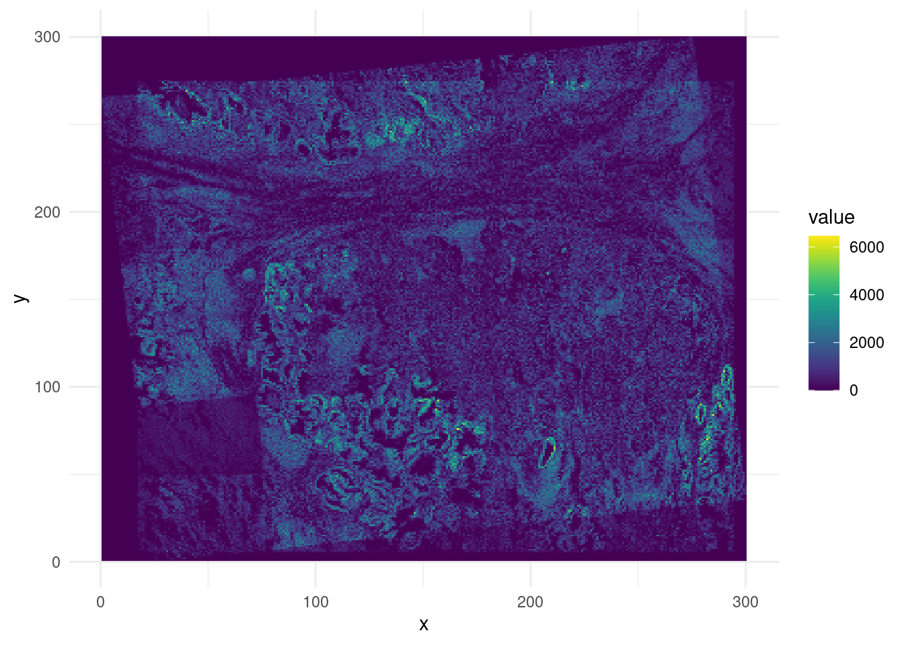
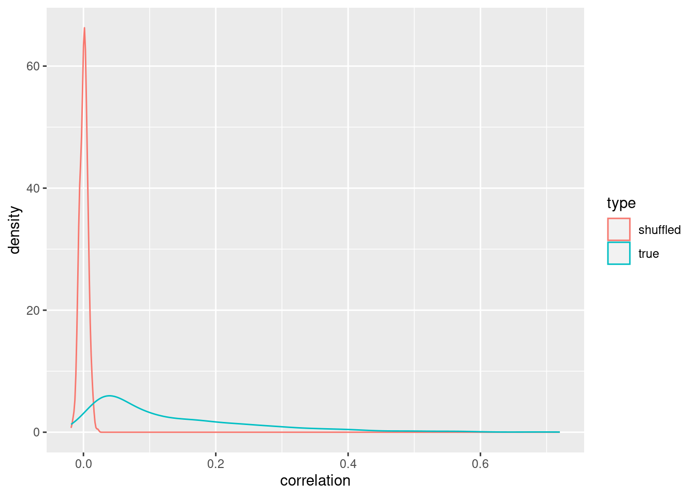
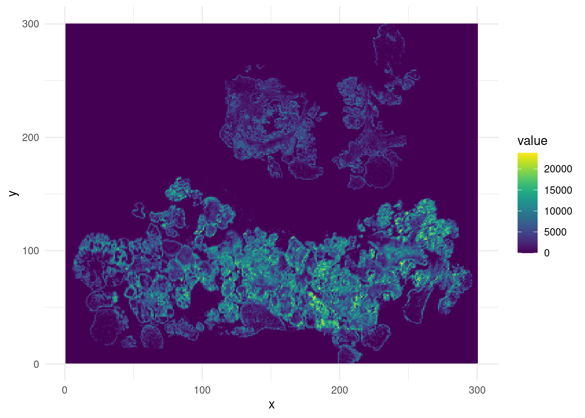
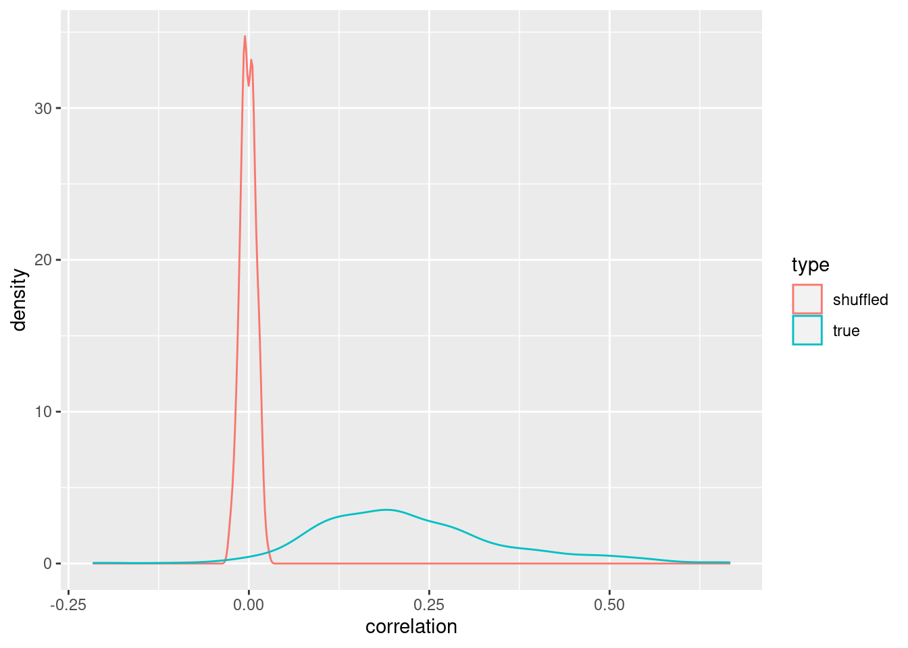
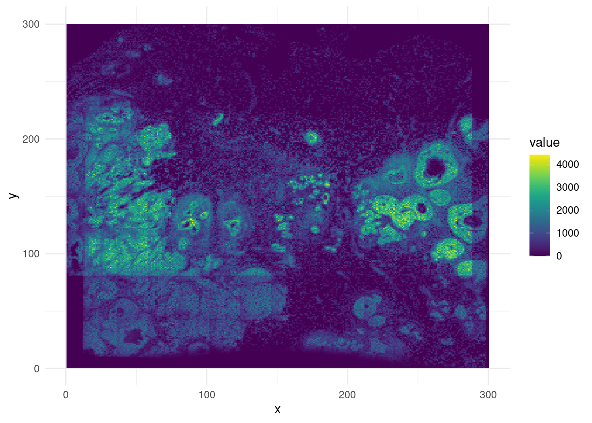
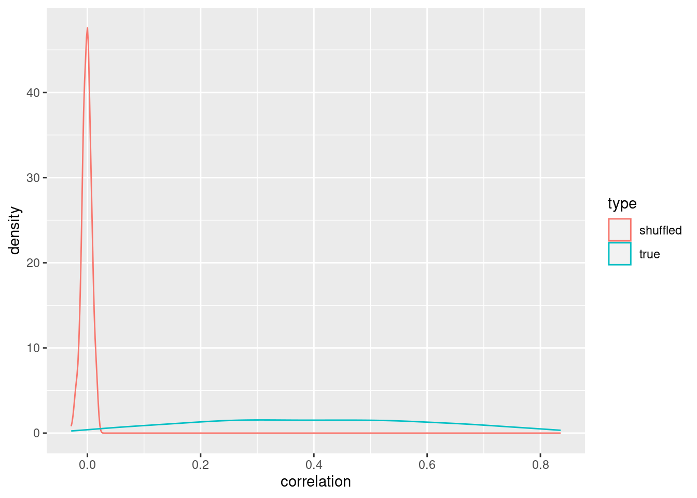
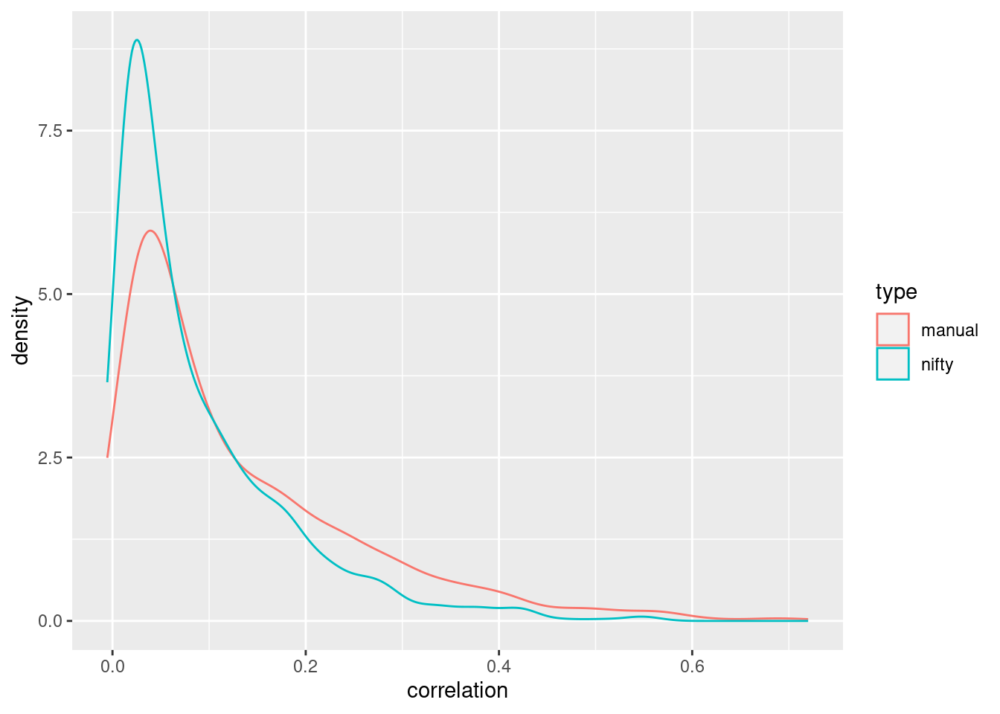
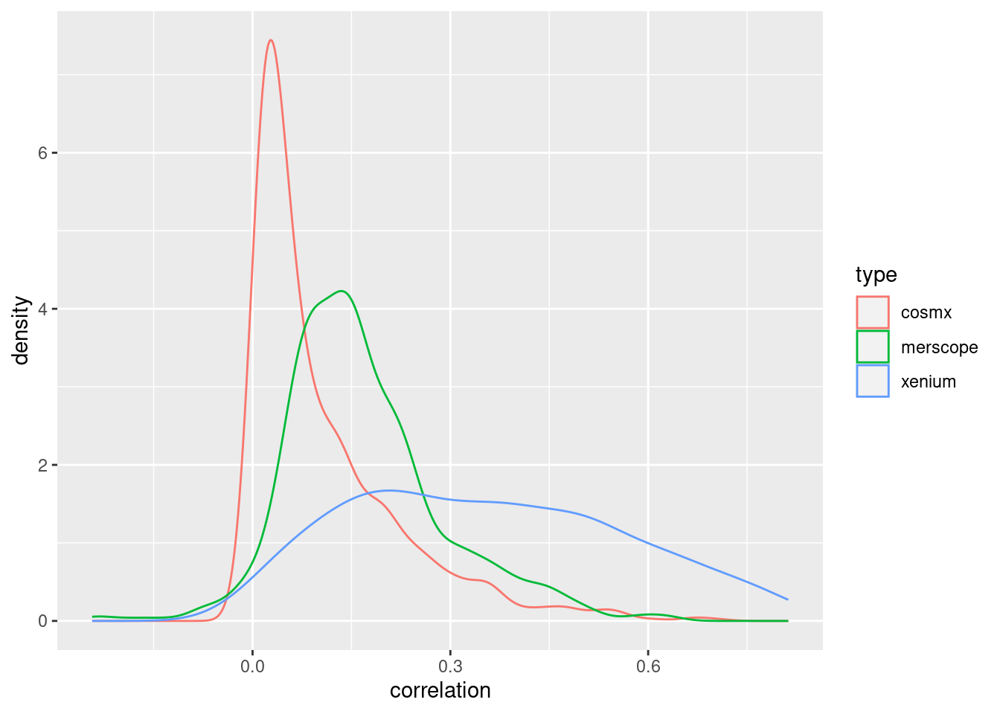
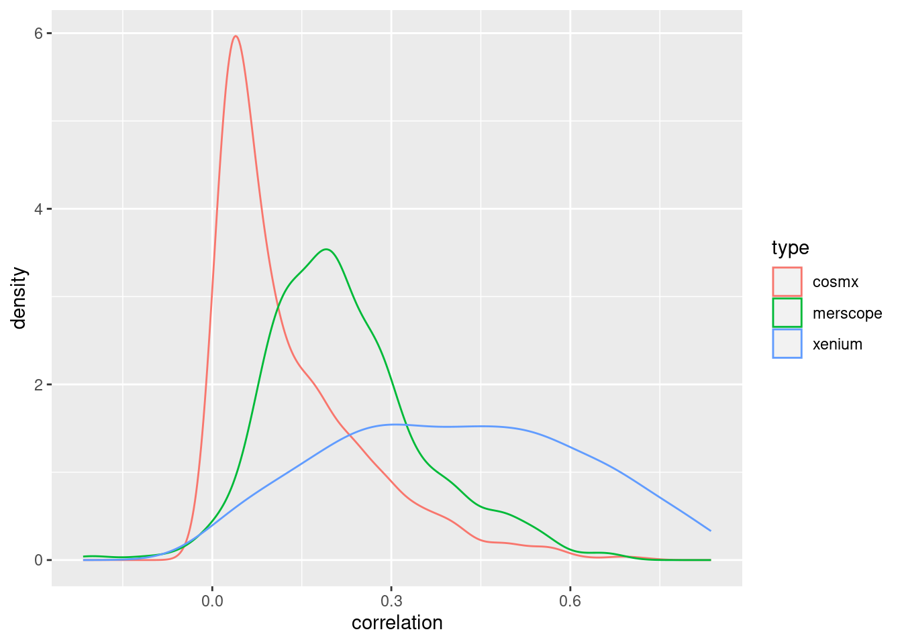
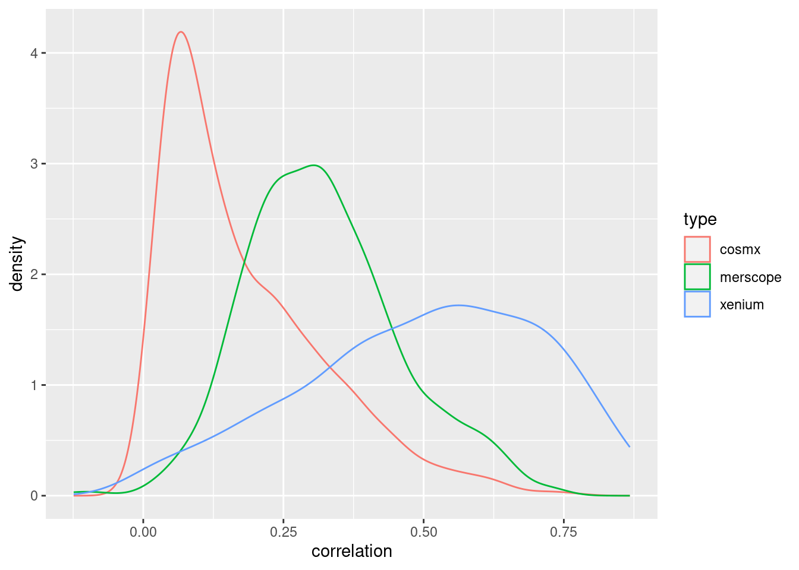

NBINS <- 200subcell-correlation
Comparing Sub-cellular spatial transcriptomics technical variability
Of the three replicates (Lung5), two adjacent ones (2 and 3) were lined up manually (using shinySTRegister).
lung5 <- cbind(
readRDS("data/cosmx/aligned/Lung5_Rep2_spe.rds"),
load_cosmx_as_spatial_experiment(
"data/cosmx/Lung5_Rep3_exprMat_file.csv",
"data/cosmx/Lung5_Rep3_metadata_file.csv"))'sample_id's are duplicated across 'SpatialExperiment' objects to cbind; appending sample indices.binned_lung5 <- convert_spe_to_image(lung5)plot_counts(binned_lung5)
sum_counts_per_bin(lung5, NBINS) |>
plot_counts_correlations()
ovarian2 <- cbind(
readRDS("data/merscope/aligned/HumanOvarianCancerPatient2Slice1_spe.rds"),
load_merscope_as_spatial_experiment(
"data/merscope/HumanOvarianCancerPatient2Slice3_cell_by_gene.csv",
"data/merscope/HumanOvarianCancerPatient2Slice3_cell_metadata.csv"))'sample_id's are duplicated across 'SpatialExperiment' objects to cbind; appending sample indices.binned_ovarian2 <- convert_spe_to_image(ovarian2)plot_counts(binned_ovarian2)
sum_counts_per_bin(ovarian2, NBINS) |>
plot_counts_correlations()
breast <- cbind(
readRDS("data/xenium/aligned/Xenium_FFPE_Human_Breast_Cancer_Rep1_spe.rds"),
load_xenium_as_spatial_experiment(
"data/xenium/Xenium_FFPE_Human_Breast_Cancer_Rep2_cell_feature_matrix.csv",
"data/xenium/Xenium_FFPE_Human_Breast_Cancer_Rep2_cells.csv"))'sample_id's are duplicated across 'SpatialExperiment' objects to cbind; appending sample indices.binned_breast <- convert_spe_to_image(breast)plot_counts(binned_breast)
sum_counts_per_bin(breast, NBINS) |>
plot_counts_correlations()
Note that these alignments were performed by hand, automated alignment (using RNiftyReg) failed in all cases except for CosMX. Even in this case, the results were slightly worse than with manual alignment.

Comparison across technologies
NBINS <- 300cosmx_cor <- sum_counts_per_bin(lung5, NBINS) |>
get_binwise_correlation_from_counts()
merscope_cor <- sum_counts_per_bin(ovarian2, NBINS) |>
get_binwise_correlation_from_counts()
xenium_cor <- sum_counts_per_bin(breast, NBINS) |>
get_binwise_correlation_from_counts()
correlation_data <- data.frame(
correlation = c(cosmx_cor, merscope_cor, xenium_cor),
type = c(rep("cosmx", length(cosmx_cor)),
rep("merscope", length(merscope_cor)),
rep("xenium", length(xenium_cor)))
)ggplot(correlation_data, aes(x = correlation, color = type)) +
geom_density()
NBINS <- 200cosmx_cor <- sum_counts_per_bin(lung5, NBINS) |>
get_binwise_correlation_from_counts()
merscope_cor <- sum_counts_per_bin(ovarian2, NBINS) |>
get_binwise_correlation_from_counts()
xenium_cor <- sum_counts_per_bin(breast, NBINS) |>
get_binwise_correlation_from_counts()
correlation_data <- data.frame(
correlation = c(cosmx_cor, merscope_cor, xenium_cor),
type = c(rep("cosmx", length(cosmx_cor)),
rep("merscope", length(merscope_cor)),
rep("xenium", length(xenium_cor)))
)ggplot(correlation_data, aes(x = correlation, color = type)) +
geom_density()
NBINS <- 100cosmx_cor <- sum_counts_per_bin(lung5, NBINS) |>
get_binwise_correlation_from_counts()
merscope_cor <- sum_counts_per_bin(ovarian2, NBINS) |>
get_binwise_correlation_from_counts()
xenium_cor <- sum_counts_per_bin(breast, NBINS) |>
get_binwise_correlation_from_counts()
correlation_data <- data.frame(
correlation = c(cosmx_cor, merscope_cor, xenium_cor),
type = c(rep("cosmx", length(cosmx_cor)),
rep("merscope", length(merscope_cor)),
rep("xenium", length(xenium_cor)))
)ggplot(correlation_data, aes(x = correlation, color = type)) +
geom_density()